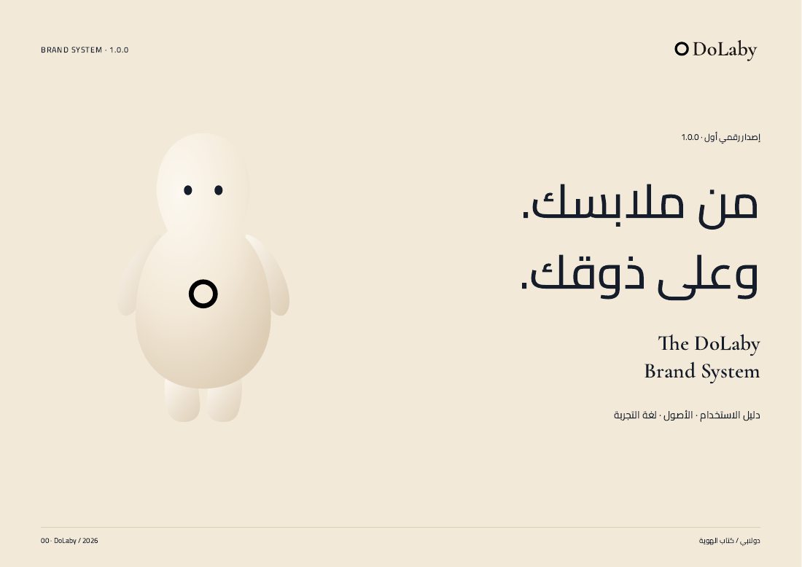
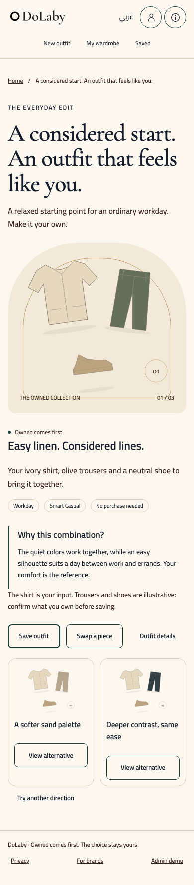
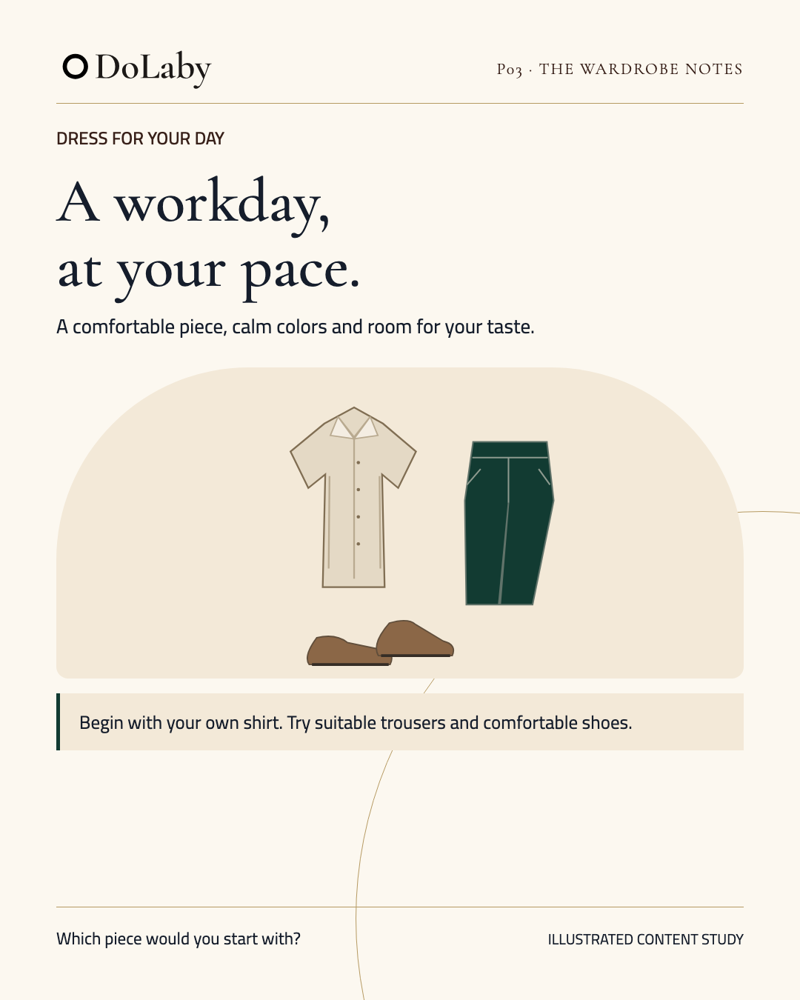
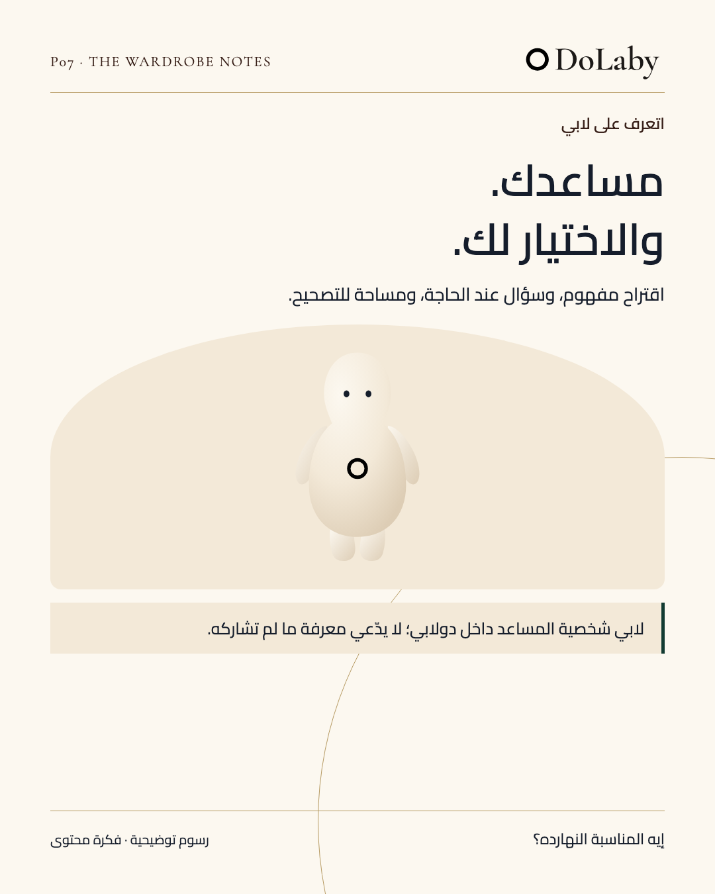

DOLABY / THE DESIGN LIBRARYعالم دولابي،
عالم دولابي،
في مكان واحد.
الهوية، والتجربة، والمحتوى.
مكتبتنا من الأصل إلى التطبيق؛ تصفّح ما تحتاجه، جرّبه، وخذه معك.
مصادر قابلة للتحرير · أصول فعلية · إصدار 1.0.0
 A CONSIDERED EVERYDAY
A CONSIDERED EVERYDAYTHE SHARED FOUNDATION01 / DOLABY
16عائلة أصول للهوية
30عائلة مكونات للواجهة
24قالبًا للمحتوى بلغتين
ONE WORLD / FOUR WAYS IN
كل جزء، له مكانه.
من قواعد العلامة إلى الشاشة والمنشور. اختر مدخلك، وستجد المعاينة والمصدر والملف الجاهز معًا.

01
هوية لها طابع.
الشعار، الألوان، الخطوط، لابي، وقواعد الاستخدام.


02
تجربة تعيش مع الهوية.
المكونات، الشاشات المتجاوبة، والنموذج التفاعلي.



03
محتوى، بنفس الروح.
منشورات وقصص وكاروسيل، بنسخ فارغة وأمثلة.
FROM SOURCE TO EXPORT
04
ومن خلف كل ذلك، المصدر.
محركات العرض والحركة والقوالب وأدوات التصدير.
THE ESSENTIALS
كل الأصول ابدأ بالأصول الأساسية.
ألواننا، من مصدر واحد.
عاجي وكتان ورمل، مع أخضر عميق ولمسة شامبانيا معتّقة.
العاجي
#FCF8F0الكتان
#F3E9D8الحجر الرملي
#DDCDB5الأخضر العميق
#123B32الشامبانيا المعتّقة
#B69A62KEEP THE WHOLE PICTURE
الحزم والتنزيلات ←تحتاج المكتبة كاملة؟
الحزمة بالمصادر والخطوط والأصول والأدلة. احتفظ بالمجلدات معًا، أو تصفّح أي ملف وتنزيله منفردًا.